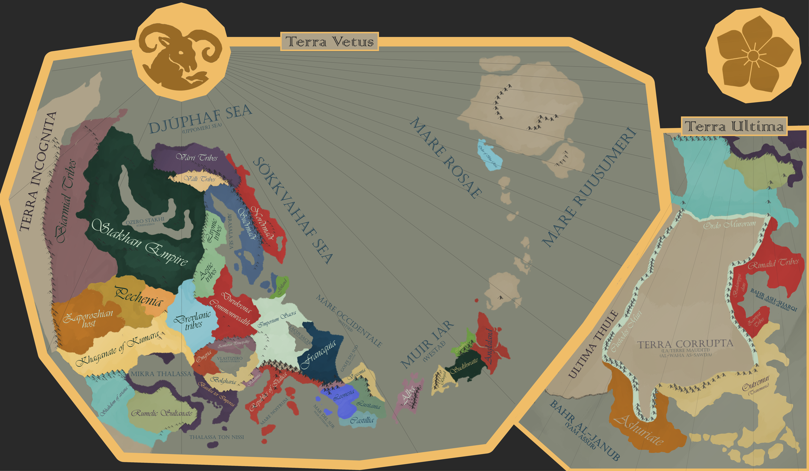
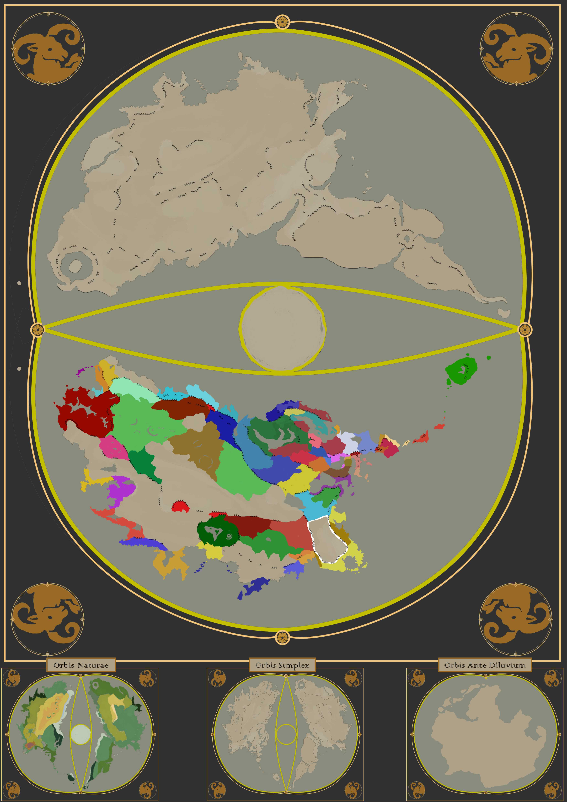

A living atlas
Project Somniferum
A world with no meaning — and the nations who refuse to accept that. Choose a place to begin exploring.
0marked places
0outlined areas
0regions recorded
0nations recorded
0species recorded
Browse the archive
A world with no meaning — and the nations who refuse to accept that. Choose a place to begin exploring.


Events in chronological order, from earliest to latest.